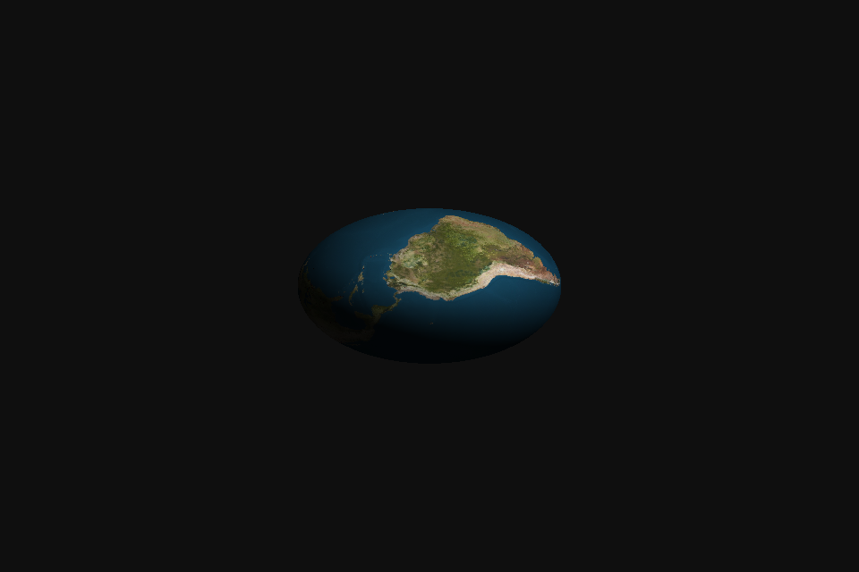
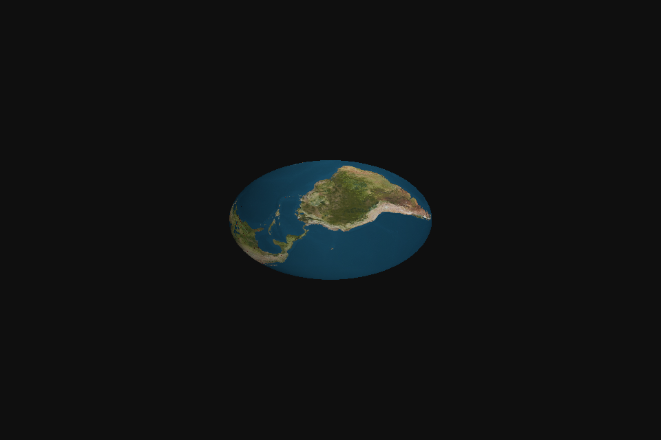

MiniEngine · 실제 Game 캡처 · 2026-10-26
Normal Matrix 적용 전 / 후
같은 TestMeshActor · 같은 카메라와 광원 · 법선 변환 방식만 비교


기존 World 변환Normal Matrix
비균일 스케일: 39,942개 픽셀에서 차이 확인. 표면의 밝기 분포가 달라집니다.
이미지는 실제 창의 원본 캡처입니다. 밝기 차이만으로 수학적 정확성을 판단하지 않으며, 법선 수치는 별도의 GPU 자동 테스트에서 검증했습니다.